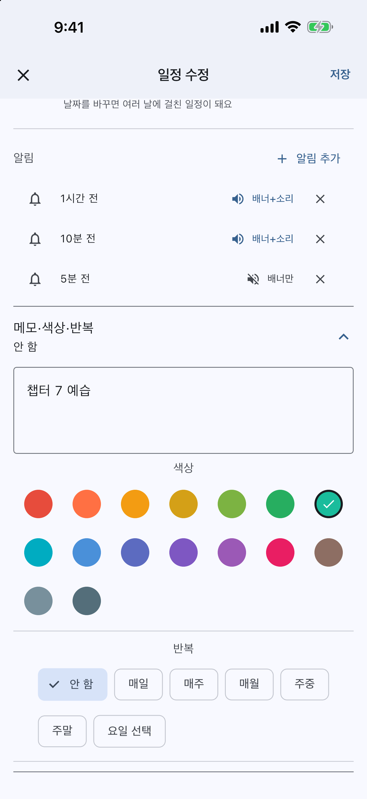

01 / REMINDERS할 마음이 들 때 말고,
할 마음이 들 때 말고,
하기로 한 시간에.A nudge when
it's time to start.
한 일정에 알림을 여러 개. 준비할 때, 출발할 때,
시작할 때—내 타이밍에 맞춰 설정하세요.Add multiple reminders to one event.
Time to prepare, time to leave, time to begin.

알림 수신은 기기 권한·시스템 설정에 따라 달라질 수 있어요.Delivery depends on device permissions and system settings.